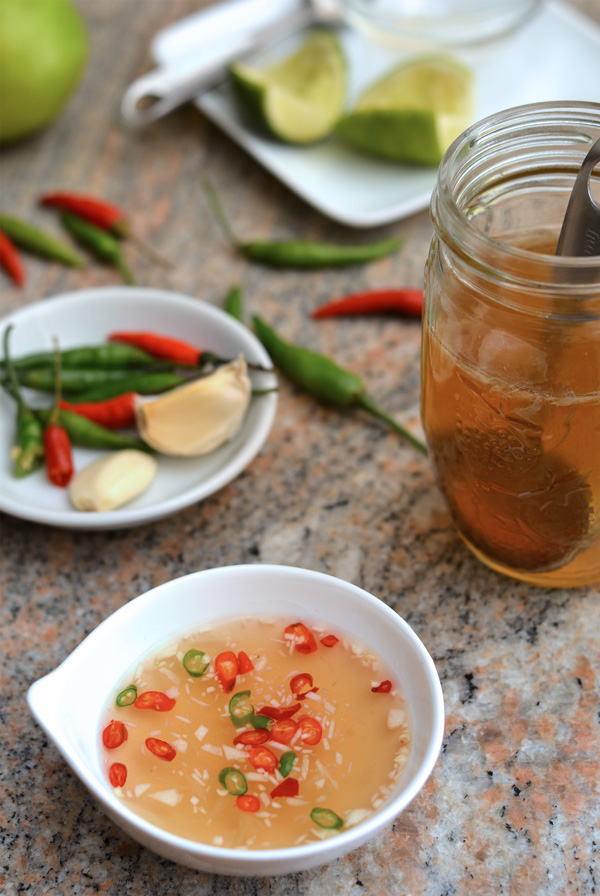
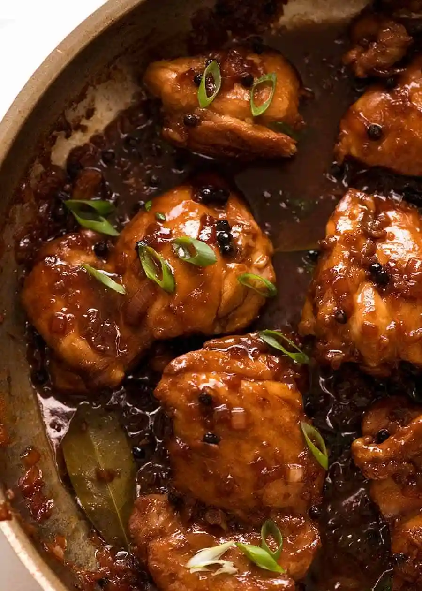
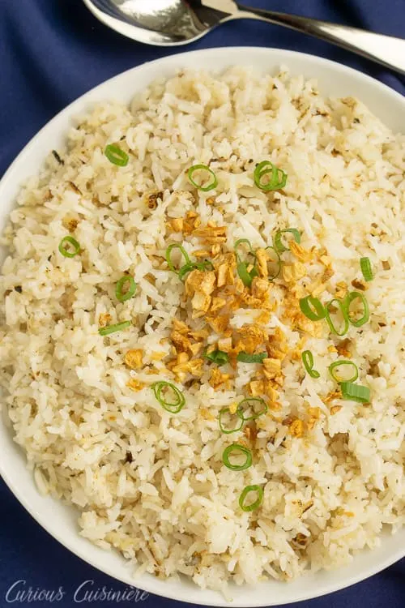

2 (10.5 ounce) cans Campbell's® Condensed Cream of Mushroom Soup
2 (10 ounce) cans tuna, drained
2 cups frozen peas
1 cup milk
2 tablespoons dry bread crumbs
1 tablespoon butter, melted
Instructions:
1. Preheat the oven to 400 degrees F (200 degrees C).
2. Stir cooked noodles, condensed soup, tuna, peas, and milk in a 3-quart casserole.
3. Bake in the preheated oven until hot, about 30 minutes; stir well.
4. Mix bread crumbs with melted butter in a bowl; sprinkle over tuna casserole and continue to bake until bread crumbs are golden brown and crispy, 5 minutes more.
Name: Nuoc Mam
Time: 5 Mins

Ingredients:
6 tbsp water
2 tbsp sugar
1.5 tbsp freshly squeezed lime or lemon juice
2 tbsp fish sauce
1 clove garlic
Instructions:
1. Combine water and sugar in a bowl. Optional: heat 1/3 of the water
2. Mix in to make dissolving the sugar easier, then add the rest of the water.
3. Add lime or lemon juice in increments until you like how it tastes.
4. Add fish sauce in small increments until you like how it tastes.
5. Top with garlic and chilies then serve.
Filipino Chicken Adobo
Time: 45 minutes

Ingredients for Marinade:
750g or 1.5 lb chicken thigh fillets , boneless and skinless (5 - 6 pieces)
3 garlic cloves , minced
(85ml) soy sauce , ordinary all purpose or light
1/3 cup + 2 tbsp white vinegar
4 bay leaves (fresh) or 3 dried
Ingredients for Cooking:
2 tbsp oil , separated (vegetable, canola or peanut)
1. Combine Chicken and Marinade ingredients in a bowl. Marinate for at least 20 minutes, or up to overnight.
2. Heat 1 tbsp oil in a skillet over high heat. Remove chicken from marinade (reserve marinade) and place in the pan. Sear both sides until browned – about 1 minute on each side. Do not cook the chicken all the way through.
3. Remove chicken skillet and set aside.
4. Heat the remaining oil in skillet. Add garlic and onion, cook 1 1/2 minutes.
5. Add the reserved marinade, water, sugar and black pepper. Bring it to a simmer then turn heat down to medium high. Simmer 5 minutes.
6. Add chicken smooth side down. Simmer uncovered for 20 to 25 minutes (no need to stir), turning chicken at around 15 minutes, until the sauce reduces down to a thick jam-like syrup.
7. If the sauce isn't thick enough, remove chicken onto a plate and let the sauce simmer by itself - it will thicken much quicker - then return chicken to the skillet to coat in the glaze.
8. Coat chicken in glaze then serve over rice.
Tomato Soup
Time: 30 minutes
Ingredients:
4 Tbsp of Butter
1 Yellow onion
1 Tbsp Minced Garlic
48 oz of Crushed tomatoes(preferably San Marzano tomatoes)
Chicken stock
1/4 Cup of Basil
1 Tbsp of Sugar
1/2 a tsp of black pepper
1 cup of Heavy Cream
Parmesan cheese
Instructions:
1. Saute Aromatics – heat a non-reactive pot over medium heat. Melt in 4 Tbsp butter then sautee onions until softened and golden (10-12 min). Add minced garlic and saute another minute.
2. Make the tomato soup base – stir in two 28 oz cans of crushed tomatoes with their juice, your chicken stock, chopped basil, sugar and black pepper. Bring to a boil then reduce heat, partially cover and simmer 10 minutes.
3. Blend if desired – use an immersion blender in the pot or blend in batches using a blender (be careful not to overfill the blender with hot liquid) and return soup to the pot.
4. Add cream and parmesan – stir in the heavy cream and shredded parmesan. Return to a simmer and season to taste if needed.
5. Serve – ladle into warm bowls and garnish with more parmesan and basil.
Sinangag(Filipino Garlic Fried Rice)
Time: 15 minutes

Ingredients:
3 Tbsp vegetable oil
12 cloves garlic, minced
4 cups cooked rice, cooled and dry
¼ tsp salt
Dash of fresh ground pepper
1 scallion, thinly sliced (for garnish)
4 eggs (optional, for serving)
Instructions:
1. In a large wok or skillet, heat the oil over medium high heat. Reduce the heat to medium and add the minced garlic. Stir fry the garlic for 2-3 minutes, until it turns a light golden color. Carefully remove the garlic from the pan, leaving the garlic-infused oil behind. Drain the fried garlic on paper towels until cool.
2. Add the cooked rice to the garlic oil in the wok, stirring to coat all the grains with oil. Spread the rice out in the wok, covering as much surface area of the hot pan as possible. Let the rice cook, undisturbed, for 3-5 min. Stir the rice well, then spread it out again and cook, undisturbed for 3-5 min more. Continue this process until the rice is cooked to your liking.
3. Once the rice is golden and starting to get crispy, return the fried garlic to the pan (saving some for garnish, if desired).
4. Season the rice with salt and pepper and transfer it to a serving dish.
5. Garnish with extra fried garlic and sliced scallions.
6. If desired, serve the rice topped with fried eggs.
<<<<<<< HEAD
Fast High Protien Chicken Tacos
Time: 20 mins
Ingredients:
1 lb of Chicken
1/2 a Cup of Taco Seasoning
1 tsp of Salt
2 Limes
3 Corn Tortilla
1 Onion
Vegetable Oil
Instructions:
1. Dice the onion, and heat the oil up in a pan.
2. Sautee the onions until soft, and place the onions into a seperate bowl.
3. Cook the chicken in a pan until tender.
4. Mix all the seasonings into the pan and coat the chicken. Squeeze a lime ontop after coated.
5. Take out the chicken and place it into a bowl.
6. Heat up the corn tortilla in a microwave
7. Put the chicken and onions in the taco, squeeze a lime over it and enjoy